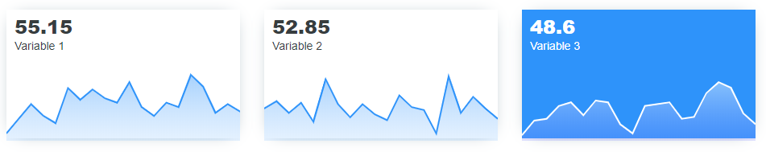

library(apexcharter)
spark_data <- data.frame(
date = Sys.Date() + 1:20,
var1 = round(rnorm(20, 50, 10)),
var2 = round(rnorm(20, 50, 10)),
var3 = round(rnorm(20, 50, 10))
)Create boxes with a sparkline to display a specific value:
With more styles :
spark_box(
data = spark_data,
title = mean(spark_data$var1),
subtitle = "Variable 1",
color = "#FFF", background = "#2E93fA",
title_style = list(color = "#FFF"),
subtitle_style = list(color = "#FFF")
)You can also use spark boxes in Shiny application, use code to launch an example :
run_sparkbox_demo()